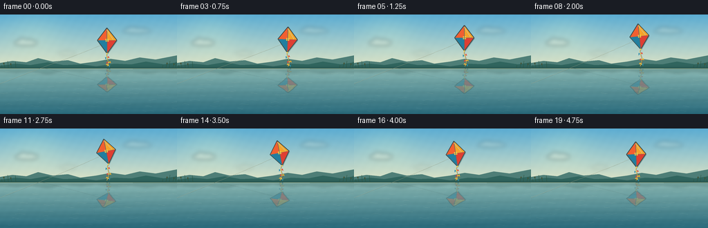
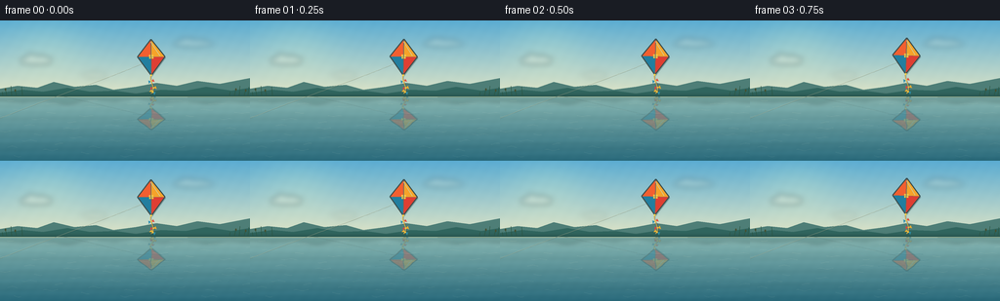

CODING AGENTS AS PIXEL WORLD MODELS
traex/GPT-5.6-Sol · phygen_057
点击播放 · 原生 RGB 像素
逐轮保存的候选
回放视频、检查图与代码变化。
每份候选均可单独播放。实际图片检查记录在下方工具轨迹中。
候选 01播放与检查图
点击播放 · 原生 RGB 像素


展开代码变化
--- 上一保存版本
+++ 本次保存版本
@@ -0,0 +1,280 @@
+#!/usr/bin/env python3
+"""Procedurally render a serene pond and a soaring kite with its reflection."""
+from pathlib import Path
+import math
+import json
+import numpy as np
+from PIL import Image, ImageDraw, ImageFilter
+import artifact_io
+
+ROOT = Path(__file__).resolve().parent
+SPEC = json.loads((ROOT / "task_spec.json").read_text())
+W, H = int(SPEC["width"]), int(SPEC["height"])
+N = int(SPEC["frames"])
+S = 4 # supersampling for smooth small-scale geometry
+WW, HH = W * S, H * S
+HORIZON = 77.0
+
+
+def sc(v):
+ return int(round(v * S))
+
+
+def pts(seq):
+ return [(sc(x), sc(y)) for x, y in seq]
+
+
+def rgba_layer():
+ return Image.new("RGBA", (WW, HH), (0, 0, 0, 0))
+
+
+def gradient_background(frame_index):
+ """Sky and water gradients with fixed, very fine organic texture."""
+ yy = np.arange(HH, dtype=np.float32)[:, None]
+ xx = np.arange(WW, dtype=np.float32)[None, :]
+ horizon = sc(HORIZON)
+ sky_top = np.array([91, 172, 210], dtype=np.float32)
+ sky_bottom = np.array([224, 229, 198], dtype=np.float32)
+ u = np.clip(yy / max(horizon, 1), 0, 1)[..., None]
+ sky = sky_top[None, None, :] * (1-u) + sky_bottom[None, None, :] * u
+ sky = np.broadcast_to(sky, (HH, WW, 3)).copy()
+ # Slight golden glow toward the left, softly embedded in the gradient.
+ glow = np.exp(-(((xx-sc(48))/(sc(42)))**2 + ((yy-sc(25))/(sc(31)))**2))[..., None]
+ sky += glow * np.array([18, 12, 1], dtype=np.float32)
+
+ depth = np.clip((yy-horizon) / max(HH-horizon, 1), 0, 1)[..., None]
+ water_near = np.array([137, 183, 178], dtype=np.float32)
+ water_far = np.array([41, 105, 122], dtype=np.float32)
+ water = water_near[None, None, :] * (1-depth) + water_far[None, None, :] * depth
+ water = np.broadcast_to(water, (HH, WW, 3)).copy()
+ # Horizontal pond undulations, low contrast to keep the surface tranquil.
+ ph = frame_index * 0.24
+ wave = (2.0*np.sin(yy*.105 + ph + np.sin(xx*.008)*.5) +
+ 1.0*np.sin(yy*.245 - ph*.65 + xx*.004))[..., None]
+ water += wave * np.array([.65, .90, 1.0], dtype=np.float32)
+
+ arr = np.where((yy < horizon)[..., None], sky, water)
+ # Deterministic sub-visible dither prevents gradient banding.
+ noise = 0.55*np.sin(xx*0.119 + yy*0.073) + 0.35*np.sin(xx*0.037 - yy*0.151)
+ arr += noise[..., None]
+ return Image.fromarray(np.clip(arr, 0, 255).astype(np.uint8), "RGB").convert("RGBA")
+
+
+def cubic(p0, p1, p2, p3, count=40):
+ out = []
+ for t in np.linspace(0.0, 1.0, count):
+ q = 1-t
+ out.append((q**3*p0[0] + 3*q*q*t*p1[0] + 3*q*t*t*p2[0] + t**3*p3[0],
+ q**3*p0[1] + 3*q*q*t*p1[1] + 3*q*t*t*p2[1] + t**3*p3[1]))
+ return out
+
+
+def draw_clouds(im, frame_index):
+ """Quiet, distant layered clouds with imperceptibly slow drift."""
+ layer = rgba_layer()
+ d = ImageDraw.Draw(layer, "RGBA")
+ drift = frame_index * 0.14
+ clouds = [
+ (20+drift, 37, 34, 8, 72),
+ (177+drift*.55, 20, 41, 7, 50),
+ (84+drift*.8, 54, 26, 5, 35),
+ ]
+ for x, y, w, h, a in clouds:
+ # Broad wisps made of overlapping soft ellipses.
+ d.ellipse((sc(x),sc(y),sc(x+w),sc(y+h)), fill=(248,247,224,a))
+ d.ellipse((sc(x+w*.18),sc(y-h*.32),sc(x+w*.55),sc(y+h*.65)), fill=(250,248,226,a))
+ d.ellipse((sc(x+w*.52),sc(y-h*.16),sc(x+w*.82),sc(y+h*.60)), fill=(243,245,224,a))
+ layer = layer.filter(ImageFilter.GaussianBlur(sc(3.0)))
+ im.alpha_composite(layer)
+
+
+def draw_landscape(im, frame_index):
+ """Distant shore, low hills and their muted water silhouettes."""
+ d = ImageDraw.Draw(im, "RGBA")
+ # Far hill layers.
+ hill_back = [(0,76),(0,70),(18,67),(38,69),(55,63),(76,68),(98,66),
+ (116,71),(139,68),(160,64),(181,67),(202,62),(225,65),(256,59),(256,78)]
+ d.polygon(pts(hill_back), fill=(78,126,119,125))
+ hill_front = [(0,78),(0,74),(23,71),(44,73),(69,69),(92,73),(118,72),
+ (139,75),(165,71),(190,72),(211,68),(237,72),(256,69),(256,79)]
+ d.polygon(pts(hill_front), fill=(48,101,94,180))
+ # Reflected shore bands below the water line, softened later by overlaid ripples.
+ refl = rgba_layer()
+ rd = ImageDraw.Draw(refl, "RGBA")
+ rd.polygon(pts([(0,77),(256,77),(256,84),(235,82),(213,85),(190,82),(165,84),
+ (139,80),(118,83),(92,81),(69,86),(44,82),(23,84),(0,82)]),
+ fill=(49,96,93,65))
+ refl = refl.filter(ImageFilter.GaussianBlur(sc(1.8)))
+ im.alpha_composite(refl)
+ # Shoreline itself.
+ d.line(pts([(0,77.3),(256,77.3)]), fill=(35,82,77,190), width=sc(.8))
+ d.line(pts([(0,78.3),(256,78.3)]), fill=(203,211,167,90), width=sc(.45))
+ # Sparse reeds frame the open reflection without cluttering it.
+ for side, bases in [(-1, [3,7,12,17,23]), (1,[235,240,245,250,254])]:
+ for j, bx in enumerate(bases):
+ ht = 4 + (j*3 % 7)
+ lean = side*(.8 + (j%2)*.7)
+ d.line(pts([(bx,77.2),(bx+lean,77.2-ht)]), fill=(43,82,61,170), width=sc(.55))
+ if j % 2 == 1:
+ d.ellipse((sc(bx+lean-.7),sc(76.5-ht),sc(bx+lean+.7),sc(79-ht)), fill=(67,81,51,155))
+
+
+def rotate_point(x, y, cx, cy, deg):
+ a = math.radians(deg)
+ c, s = math.cos(a), math.sin(a)
+ return (cx + x*c - y*s, cy + x*s + y*c)
+
+
+def draw_bow(draw, center, tangent_angle, size, colors, alpha=255):
+ """Small tail ribbon oriented along the local tail tangent."""
+ cx, cy = center
+ a = tangent_angle
+ c, s = math.cos(a), math.sin(a)
+ # local x is perpendicular to tail and y is along it
+ def tr(x, y):
+ return (cx + x*c - y*s, cy + x*s + y*c)
+ left = [tr(-.4,0), tr(-size,-size*.52), tr(-size*.78,size*.5)]
+ right = [tr(.4,0), tr(size,-size*.52), tr(size*.78,size*.5)]
+ draw.polygon(pts(left), fill=(*colors[0],alpha))
+ draw.polygon(pts(right), fill=(*colors[1],alpha))
+ draw.ellipse((sc(cx-.8),sc(cy-.8),sc(cx+.8),sc(cy+.8)), fill=(246,196,66,alpha))
+
+
+def make_kite_layer(frame_index):
+ """Render kite, tail and tether on transparency for direct and reflected use."""
+ theta = 2*math.pi*frame_index/N
+ cx = 154.0 + 6.2*math.sin(theta) + 1.4*math.sin(2*theta+0.5)
+ cy = 34.5 + 2.8*math.cos(theta+0.35) + .6*math.sin(2*theta)
+ ang = -5.0 + 7.0*math.sin(theta+0.75)
+ layer = rgba_layer()
+ d = ImageDraw.Draw(layer, "RGBA")
+
+ # Taut flying line: a delicate, curved diagonal toward an off-screen flyer.
+ attach = rotate_point(0, 2.5, cx, cy, ang)
+ string_curve = cubic(attach, (cx-25,cy+16), (71,72), (-7,103), 60)
+ # A soft dark under-stroke and a sunlit filament make it readable but fine.
+ d.line(pts(string_curve), fill=(43,72,70,85), width=sc(.85))
+ d.line(pts([(x,y-.18) for x,y in string_curve]), fill=(234,222,178,145), width=sc(.34))
+
+ top = rotate_point(0,-18,cx,cy,ang)
+ right = rotate_point(14,0,cx,cy,ang)
+ bottom = rotate_point(0,19,cx,cy,ang)
+ left = rotate_point(-14,0,cx,cy,ang)
+ center = rotate_point(0,0,cx,cy,ang)
+
+ # Tail is behind the sail. Its curve breathes naturally with the kite.
+ sway = 2.2*math.sin(theta+0.5)
+ p0 = bottom
+ p1 = (bottom[0]-4+sway, bottom[1]+6)
+ p2 = (bottom[0]+6+sway*.4, bottom[1]+14)
+ p3 = (bottom[0]-1+sway, min(75.0,bottom[1]+25))
+ tail = cubic(p0,p1,p2,p3,48)
+ d.line(pts(tail), fill=(74,67,72,120), width=sc(1.45))
+ d.line(pts([(x-.2,y-.25) for x,y in tail]), fill=(238,187,62,230), width=sc(.75))
+ for ti, cols in [(0.34,((229,67,54),(42,139,172))),
+ (0.66,((251,174,43),(222,70,61))),
+ (0.91,((43,142,170),(247,179,50)))]:
+ idx = min(len(tail)-2, int(ti*(len(tail)-1)))
+ x,y = tail[idx]
+ nx,ny = tail[idx+1]
+ tangent = math.atan2(ny-y,nx-x) + math.pi/2
+ draw_bow(d,(x,y),tangent,3.2,cols,240)
+
+ # Small offset shadow adds depth without appearing detached.
+ shadow = [(x+1.0,y+1.25) for x,y in [top,right,bottom,left]]
+ d.polygon(pts(shadow), fill=(35,61,65,80))
+
+ # Four clearly separated cloth panels.
+ d.polygon(pts([top,right,center]), fill=(245,163,42,255))
+ d.polygon(pts([right,bottom,center]), fill=(222,63,51,255))
+ d.polygon(pts([bottom,left,center]), fill=(34,126,159,255))
+ d.polygon(pts([left,top,center]), fill=(242,95,48,255))
+ # Warm central patch, seam spars, dark rim.
+ d.polygon(pts([rotate_point(-2.1,-2,cx,cy,ang), rotate_point(2.2,-2,cx,cy,ang),
+ rotate_point(2.2,2,cx,cy,ang), rotate_point(-2.0,2,cx,cy,ang)]),
+ fill=(255,202,57,235))
+ d.line(pts([top,bottom]), fill=(75,71,66,190), width=sc(.65))
+ d.line(pts([left,right]), fill=(75,71,66,165), width=sc(.55))
+ d.line(pts([top,right,bottom,left,top]), fill=(52,67,65,235), width=sc(1.05), joint="curve")
+ # Tiny knots and directional highlights.
+ d.ellipse((sc(bottom[0]-.85),sc(bottom[1]-.85),sc(bottom[0]+.85),sc(bottom[1]+.85)),
+ fill=(255,210,66,255))
+ hi1 = rotate_point(-.5,-15.5,cx,cy,ang)
+ hi2 = rotate_point(8.8,-1.2,cx,cy,ang)
+ d.line(pts([hi1,hi2]), fill=(255,231,142,125), width=sc(.55))
+ return layer
+
+
+def reflected_object(obj, frame_index):
+ """Mirror the transparent kite into the pond with wave displacement."""
+ src = np.asarray(obj, dtype=np.uint8)
+ dst = np.zeros_like(src)
+ hy = sc(HORIZON)
+ compression = 0.61
+ phase = frame_index * 0.25
+ for y in range(hy, HH):
+ depth = y-hy
+ sy = int(round(hy - depth/compression))
+ if sy < 0:
+ break
+ # Calm water: a few pixels of coherent lateral ripple, increasing with depth.
+ shift = int(round(S*(.38*math.sin(depth/(S*2.4)+phase) +
+ .18*math.sin(depth/(S*.92)-phase*.65))*(.45+depth/(HH-hy))))
+ dst[y] = np.roll(src[sy], shift, axis=0)
+ fade = max(0.0, 0.50*(1.0-depth/(HH-hy)*.58))
+ dst[y,:,3] = (dst[y,:,3].astype(np.float32)*fade).astype(np.uint8)
+ # Tint colored light reflected in blue-green water.
+ rgb = dst[:,:,:3].astype(np.float32)
+ tint = np.array([64,112,122],dtype=np.float32)
+ dst[:,:,:3] = np.clip(rgb*.72 + tint*.28,0,255).astype(np.uint8)
+ refl = Image.fromarray(dst,"RGBA")
+ # Very slight anisotropic softness, followed by thin wave interruptions.
+ refl = refl.filter(ImageFilter.GaussianBlur(sc(.28)))
+ return refl
+
+
+def draw_water_details(im, frame_index):
+ layer = rgba_layer()
+ d = ImageDraw.Draw(layer, "RGBA")
+ ph = frame_index*.33
+ # Broken horizontal glints. Their low alpha preserves a polished, quiet surface.
+ for j, y in enumerate(np.linspace(82,139,19)):
+ amp = .28 + (y-HORIZON)*.008
+ for k in range(3):
+ x = (17 + j*37 + k*83 + 5*math.sin(ph+j*.7)) % 275 - 10
+ length = 7 + ((j*5+k*3)%12)
+ col = (200,220,199,34 if j<11 else 27)
+ curve = [(x+i, y + amp*math.sin(i*.5+j+ph*.3)) for i in np.linspace(0,length,14)]
+ d.line(pts(curve), fill=col, width=sc(.38 if y<112 else .55))
+ # A handful of darker thin ripples around, and through, the kite reflection.
+ for j,(y, halfw) in enumerate([(96,18),(102,24),(108,28),(114,22),(121,16)]):
+ cx = 154 + 6.2*math.sin(2*math.pi*frame_index/N)
+ curve = [(cx-halfw+i, y+.42*math.sin(i*.31+ph+j)) for i in np.linspace(0,2*halfw,40)]
+ d.line(pts(curve), fill=(30,92,108,38), width=sc(.48))
+ if j in (1,3):
+ curve2=[(x,yv+1.2) for x,yv in curve[5:-4]]
+ d.line(pts(curve2), fill=(211,224,195,30), width=sc(.35))
+ im.alpha_composite(layer)
+
+
+def render_frame(i):
+ im = gradient_background(i)
+ draw_clouds(im,i)
+ draw_landscape(im,i)
+ kite = make_kite_layer(i)
+ im.alpha_composite(reflected_object(kite,i))
+ draw_water_details(im,i)
+ im.alpha_composite(kite)
+ # Final downsampling unifies detail and creates natural antialiasing.
+ return np.asarray(im.convert("RGB").resize((W,H),Image.Resampling.LANCZOS),dtype=np.uint8)
+
+
+def main():
+ frames = np.stack([render_frame(i) for i in range(N)],axis=0)
+ assert frames.shape == (N,H,W,3) and frames.dtype == np.uint8
+ artifact_io.save(frames, ROOT)
+ print(f"saved {N} RGB frames at {W}x{H} to {ROOT}")
+
+
+if __name__ == "__main__":
+ main()
可观测工具轨迹
实际执行的命令与返回图片。
命令 1exit 0
/bin/bash -lc "ls -la && printf '\\n--- prompt.txt ---\\n' && cat prompt.txt && printf '\\n--- GENERATION_RULES.md ---\\n' && cat GENERATION_RULES.md && printf '\\n--- task_spec.json ---\\n' && cat task_spec.json"
命令 2exit 0
/bin/bash -lc "find . -maxdepth 3 -type f -not -path './.git/*' -printf '%p\\n' | sort && printf '\\n--- tools ---\\n' && (command -v ffmpeg || true) && (command -v python3 || true) && (command -v blender || true)"
命令 3exit 0
/bin/bash -lc "cat artifact_io.py && python3 - <<'PY'
try:
import PIL; print('PIL', PIL.__version__)
except Exception as e: print('no PIL',e)
try:
import numpy; print('numpy',numpy.__version__)
except Exception as e: print('no numpy',e)
PY"命令 4exit 0
/bin/bash -lc "cat > generate.py <<'PY'
#"'!/usr/bin/env python3
"""Procedurally render a serene pond and a soaring kite with its reflection."""
from pathlib import Path
import math
import json
import numpy as np
from PIL import Image, ImageDraw, ImageFilter
import artifact_io
ROOT = Path(__file__).resolve().parent
SPEC = json.loads((ROOT / "task_spec.json").read_text())
W, H = int(SPEC["width"]), int(SPEC["height"])
N = int(SPEC["frames"])
S = 4 # supersampling for smooth small-scale geometry
WW, HH = W * S, H * S
HORIZON = 77.0
def sc(v):
return int(round(v * S))
def pts(seq):
return [(sc(x), sc(y)) for x, y in seq]
def rgba_layer():
return Image.new("RGBA", (WW, HH), (0, 0, 0, 0))
def gradient_background(frame_index):
"""Sky and water gradients with fixed, very fine organic texture."""
yy = np.arange(HH, dtype=np.float32)[:, None]
xx = np.arange(WW, dtype=np.float32)[None, :]
horizon = sc(HORIZON)
sky_top = np.array([91, 172, 210], dtype=np.float32)
sky_bottom = np.array([224, 229, 198], dtype=np.float32)
u = np.clip(yy / max(horizon, 1), 0, 1)[..., None]
sky = sky_top[None, None, :] * (1-u) + sky_bottom[None, None, :] * u
sky = np.broadcast_to(sky, (HH, WW, 3)).copy()
# Slight golden glow toward the left, softly embedded in the gradient.
glow = np.exp(-(((xx-sc(48))/(sc(42)))**2 + ((yy-sc(25))/(sc(31)))**2))[..., None]
sky += glow * np.array([18, 12, 1], dtype=np.float32)
depth = np.clip((yy-horizon) / max(HH-horizon, 1), 0, 1)[..., None]
water_near = np.array([137, 183, 178], dtype=np.float32)
water_far = np.array([41, 105, 122], dtype=np.float32)
water = water_near[None, None, :] * (1-depth) + water_far[None, None, :] * depth
water = np.broadcast_to(water, (HH, WW, 3)).copy()
# Horizontal pond undulations, low contrast to keep the surface tranquil.
ph = frame_index * 0.24
wave = (2.0*np.sin(yy*.105 + ph + np.sin(xx*.008)*.5) +
1.0*np.sin(yy*.245 - ph*.65 + xx*.004))[..., None]
water += wave * np.array([.65, .90, 1.0], dtype=np.float32)
arr = np.where((yy < horizon)[..., None], sky, water)
# Deterministic sub-visible dither prevents gradient banding.
noise = 0.55*np.sin(xx*0.119 + yy*0.073) + 0.35*np.sin(xx*0.037 - yy*0.151)
arr += noise[..., None]
return Image.fromarray(np.clip(arr, 0, 255).astype(np.uint8), "RGB").convert("RGBA")
def cubic(p0, p1, p2, p3, count=40):
out = []
for t in np.linspace(0.0, 1.0, count):
q = 1-t
out.append((q**3*p0[0] + 3*q*q*t*p1[0] + 3*q*t*t*p2[0] + t**3*p3[0],
q**3*p0[1] + 3*q*q*t*p1[1] + 3*q*t*t*p2[1] + t**3*p3[1]))
return out
def draw_clouds(im, frame_index):
"""Quiet, distant layered clouds with imperceptibly slow drift."""
layer = rgba_layer()
d = ImageDraw.Draw(layer, "RGBA")
drift = frame_index * 0.14
clouds = [
(20+drift, 37, 34, 8, 72),
(177+drift*.55, 20, 41, 7, 50),
(84+drift*.8, 54, 26, 5, 35),
]
for x, y, w, h, a in clouds:
# Broad wisps made of overlapping soft ellipses.
d.ellipse((sc(x),sc(y),sc(x+w),sc(y+h)), fill=(248,247,224,a))
d.ellipse((sc(x+w*.18),sc(y-h*.32),sc(x+w*.55),sc(y+h*.65)), fill=(250,248,226,a))
d.ellipse((sc(x+w*.52),sc(y-h*.16),sc(x+w*.82),sc(y+h*.60)), fill=(243,245,224,a))
layer = layer.filter(ImageFilter.GaussianBlur(sc(3.0)))
im.alpha_composite(layer)
def draw_landscape(im, frame_index):
"""Distant shore, low hills and their muted water silhouettes."""
d = ImageDraw.Draw(im, "RGBA")
# Far hill layers.
hill_back = [(0,76),(0,70),(18,67),(38,69),(55,63),(76,68),(98,66),
(116,71),(139,68),(160,64),(181,67),(202,62),(225,65),(256,59),(256,78)]
d.polygon(pts(hill_back), fill=(78,126,119,125))
hill_front = [(0,78),(0,74),(23,71),(44,73),(69,69),(92,73),(118,72),
(139,75),(165,71),(190,72),(211,68),(237,72),(256,69),(256,79)]
d.polygon(pts(hill_front), fill=(48,101,94,180))
# Reflected shore bands below the water line, softened later by overlaid ripples.
refl = rgba_layer()
rd = ImageDraw.Draw(refl, "RGBA")
rd.polygon(pts([(0,77),(256,77),(256,84),(235,82),(213,85),(190,82),(165,84),
(139,80),(118,83),(92,81),(69,86),(44,82),(23,84),(0,82)]),
fill=(49,96,93,65))
refl = refl.filter(ImageFilter.GaussianBlur(sc(1.8)))
im.alpha_composite(refl)
# Shoreline itself.
d.line(pts([(0,77.3),(256,77.3)]), fill=(35,82,77,190), width=sc(.8))
d.line(pts([(0,78.3),(256,78.3)]), fill=(203,211,167,90), width=sc(.45))
# Sparse reeds frame the open reflection without cluttering it.
for side, bases in [(-1, [3,7,12,17,23]), (1,[235,240,245,250,254])]:
for j, bx in enumerate(bases):
ht = 4 + (j*3 % 7)
lean = side*(.8 + (j%2)*.7)
d.line(pts([(bx,77.2),(bx+lean,77.2-ht)]), fill=(43,82,61,170), width=sc(.55))
if j % 2 == 1:
d.ellipse((sc(bx+lean-.7),sc(76.5-ht),sc(bx+lean+.7),sc(79-ht)), fill=(67,81,51,155))
def rotate_point(x, y, cx, cy, deg):
a = math.radians(deg)
c, s = math.cos(a), math.sin(a)
return (cx + x*c - y*s, cy + x*s + y*c)
def draw_bow(draw, center, tangent_angle, size, colors, alpha=255):
"""Small tail ribbon oriented along the local tail tangent."""
cx, cy = center
a = tangent_angle
c, s = math.cos(a), math.sin(a)
# local x is perpendicular to tail and y is along it
def tr(x, y):
return (cx + x*c - y*s, cy + x*s + y*c)
left = [tr(-.4,0), tr(-size,-size*.52), tr(-size*.78,size*.5)]
right = [tr(.4,0), tr(size,-size*.52), tr(size*.78,size*.5)]
draw.polygon(pts(left), fill=(*colors[0],alpha))
draw.polygon(pts(right), fill=(*colors[1],alpha))
draw.ellipse((sc(cx-.8),sc(cy-.8),sc(cx+.8),sc(cy+.8)), fill=(246,196,66,alpha))
def make_kite_layer(frame_index):
"""Render kite, tail and tether on transparency for direct and reflected use."""
theta = 2*math.pi*frame_index/N
cx = 154.0 + 6.2*math.sin(theta) + 1.4*math.sin(2*theta+0.5)
cy = 34.5 + 2.8*math.cos(theta+0.35) + .6*math.sin(2*theta)
ang = -5.0 + 7.0*math.sin(theta+0.75)
layer = rgba_layer()
d = ImageDraw.Draw(layer, "RGBA")
# Taut flying line: a delicate, curved diagonal toward an off-screen flyer.
attach = rotate_point(0, 2.5, cx, cy, ang)
string_curve = cubic(attach, (cx-25,cy+16), (71,72), (-7,103), 60)
# A soft dark under-stroke and a sunlit filament make it readable but fine.
d.line(pts(string_curve), fill=(43,72,70,85), width=sc(.85))
d.line(pts([(x,y-.18) for x,y in string_curve]), fill=(234,222,178,145), width=sc(.34))
top = rotate_point(0,-18,cx,cy,ang)
right = rotate_point(14,0,cx,cy,ang)
bottom = rotate_point(0,19,cx,cy,ang)
left = rotate_point(-14,0,cx,cy,ang)
center = rotate_point(0,0,cx,cy,ang)
# Tail is behind the sail. Its curve breathes naturally with the kite.
sway = 2.2*math.sin(theta+0.5)
p0 = bottom
p1 = (bottom[0]-4+sway, bottom[1]+6)
p2 = (bottom[0]+6+sway*.4, bottom[1]+14)
p3 = (bottom[0]-1+sway, min(75.0,bottom[1]+25))
tail = cubic(p0,p1,p2,p3,48)
d.line(pts(tail), fill=(74,67,72,120), width=sc(1.45))
d.line(pts([(x-.2,y-.25) for x,y in tail]), fill=(238,187,62,230), width=sc(.75))
for ti, cols in [(0.34,((229,67,54),(42,139,172))),
(0.66,((251,174,43),(222,70,61))),
(0.91,((43,142,170),(247,179,50)))]:
idx = min(len(tail)-2, int(ti*(len(tail)-1)))
x,y = tail[idx]
nx,ny = tail[idx+1]
tangent = math.atan2(ny-y,nx-x) + math.pi/2
draw_bow(d,(x,y),tangent,3.2,cols,240)
# Small offset shadow adds depth without appearing detached.
shadow = [(x+1.0,y+1.25) for x,y in [top,right,bottom,left]]
d.polygon(pts(shadow), fill=(35,61,65,80))
# Four clearly separated cloth panels.
d.polygon(pts([top,right,center]), fill=(245,163,42,255))
d.polygon(pts([right,bottom,center]), fill=(222,63,51,255))
d.polygon(pts([bottom,left,center]), fill=(34,126,159,255))
d.polygon(pts([left,top,center]), fill=(242,95,48,255))
# Warm central patch, seam spars, dark rim.
d.polygon(pts([rotate_point(-2.1,-2,cx,cy,ang), rotate_point(2.2,-2,cx,cy,ang),
rotate_point(2.2,2,cx,cy,ang), rotate_point(-2.0,2,cx,cy,ang)]),
fill=(255,202,57,235))
d.line(pts([top,bottom]), fill=(75,71,66,190), width=sc(.65))
d.line(pts([left,right]), fill=(75,71,66,165), width=sc(.55))
d.line(pts([top,right,bottom,left,top]), fill=(52,67,65,235), width=sc(1.05), joint="curve")
# Tiny knots and directional highlights.
d.ellipse((sc(bottom[0]-.85),sc(bottom[1]-.85),sc(bottom[0]+.85),sc(bottom[1]+.85)),
fill=(255,210,66,255))
hi1 = rotate_point(-.5,-15.5,cx,cy,ang)
hi2 = rotate_point(8.8,-1.2,cx,cy,ang)
d.line(pts([hi1,hi2]), fill=(255,231,142,125), width=sc(.55))
return layer
def reflected_object(obj, frame_index):
"""Mirror the transparent kite into the pond with wave displacement."""
src = np.asarray(obj, dtype=np.uint8)
dst = np.zeros_like(src)
hy = sc(HORIZON)
compression = 0.61
phase = frame_index * 0.25
for y in range(hy, HH):
depth = y-hy
sy = int(round(hy - depth/compression))
if sy < 0:
break
# Calm water: a few pixels of coherent lateral ripple, increasing with depth.
shift = int(round(S*(.38*math.sin(depth/(S*2.4)+phase) +
.18*math.sin(depth/(S*.92)-phase*.65))*(.45+depth/(HH-hy))))
dst[y] = np.roll(src[sy], shift, axis=0)
fade = max(0.0, 0.50*(1.0-depth/(HH-hy)*.58))
dst[y,:,3] = (dst[y,:,3].astype(np.float32)*fade).astype(np.uint8)
# Tint colored light reflected in blue-green water.
rgb = dst[:,:,:3].astype(np.float32)
tint = np.array([64,112,122],dtype=np.float32)
dst[:,:,:3] = np.clip(rgb*.72 + tint*.28,0,255).astype(np.uint8)
refl = Image.fromarray(dst,"RGBA")
# Very slight anisotropic softness, followed by thin wave interruptions.
refl = refl.filter(ImageFilter.GaussianBlur(sc(.28)))
return refl
def draw_water_details(im, frame_index):
layer = rgba_layer()
d = ImageDraw.Draw(layer, "RGBA")
ph = frame_index*.33
# Broken horizontal glints. Their low alpha preserves a polished, quiet surface.
for j, y in enumerate(np.linspace(82,139,19)):
amp = .28 + (y-HORIZON)*.008
for k in range(3):
x = (17 + j*37 + k*83 + 5*math.sin(ph+j*.7)) % 275 - 10
length = 7 + ((j*5+k*3)%12)
col = (200,220,199,34 if j<11 else 27)
curve = [(x+i, y + amp*math.sin(i*.5+j+ph*.3)) for i in np.linspace(0,length,14)]
d.line(pts(curve), fill=col, width=sc(.38 if y<112 else .55))
# A handful of darker thin ripples around, and through, the kite reflection.
for j,(y, halfw) in enumerate([(96,18),(102,24),(108,28),(114,22),(121,16)]):
cx = 154 + 6.2*math.sin(2*math.pi*frame_index/N)
curve = [(cx-halfw+i, y+.42*math.sin(i*.31+ph+j)) for i in np.linspace(0,2*halfw,40)]
d.line(pts(curve), fill=(30,92,108,38), width=sc(.48))
if j in (1,3):
curve2=[(x,yv+1.2) for x,yv in curve[5:-4]]
d.line(pts(curve2), fill=(211,224,195,30), width=sc(.35))
im.alpha_composite(layer)
def render_frame(i):
im = gradient_background(i)
draw_clouds(im,i)
draw_landscape(im,i)
kite = make_kite_layer(i)
im.alpha_composite(reflected_object(kite,i))
draw_water_details(im,i)
im.alpha_composite(kite)
# Final downsampling unifies detail and creates natural antialiasing.
return np.asarray(im.convert("RGB").resize((W,H),Image.Resampling.LANCZOS),dtype=np.uint8)
def main():
frames = np.stack([render_frame(i) for i in range(N)],axis=0)
assert frames.shape == (N,H,W,3) and frames.dtype == np.uint8
artifact_io.save(frames, ROOT)
print(f"saved {N} RGB frames at {W}x{H} to {ROOT}")
if __name__ == "__main__":
main()
PY
python3 generate.py
ls -lh pixels.npz inspection.png transition_check.png index.html frames/00.png frames/19.png'命令 5exit 0
/bin/bash -lc "python3 - <<'PY'
import numpy as np
from PIL import Image
from pathlib import Path
fs=np.stack([np.asarray(Image.open(f'frames/{i:02}.png').convert('RGB')) for i in range(20)])
print('shape/dtype/range',fs.shape,fs.dtype,fs.min(),fs.max())
print('mean RGB',fs.mean((0,1,2)).round(2))
d=np.abs(fs[1:].astype(np.int16)-fs[:-1].astype(np.int16))
print('adjacent MAE mean/min/max',d.mean(),d.mean((1,2,3)).min(),d.mean((1,2,3)).max())
# high-chroma occupancy in sky region (kite), and analogous reflected pond region
mx=fs.max(3); mn=fs.min(3); chrom=mx-mn
warm=((fs[:,:77,:,0]>180)&(fs[:,:77,:,0]>fs[:,:77,:,1]*1.2)&(chrom[:,:77]>50))
ref=((chrom[:,78:130]>25)&(fs[:,78:130,:,0]>75))
print('direct saturated warm px/frame',warm.sum((1,2)).tolist())
print('water chromatic reflection-ish px/frame',ref.sum((1,2)).tolist())
# artifact packed shape
z=np.load('pixels.npz')['pixels']
print('packed tensor',z.shape,z.dtype)
PY"命令 6exit 0
/bin/bash -lc '(command -v chafa || true); (command -v viu || true); (command -v jp2 || true); git status --short'
命令 7exit 1
/bin/bash -lc "python3 -m py_compile generate.py && sha256sum pixels.npz frames/00.png frames/19.png > .tmp/hashes_before.txt && python3 generate.py >/tmp/regenerate.log 2>&1 && sha256sum pixels.npz frames/00.png frames/19.png > .tmp/hashes_after.txt && diff -u .tmp/hashes_before.txt .tmp/hashes_after.txt && python3 - <<'PY'
import json,re
from pathlib import Path
from PIL import Image
import numpy as np
assert len(list(Path('frames').glob('*.png'))) == 20
for i in range(20):
im=Image.open(f'frames/{i:02d}.png')
assert im.mode=='RGB' and im.size==(256,144)
z=np.load('pixels.npz')['pixels']
assert z.shape==(144,256,20) and z.dtype==np.uint32
html=Path('index.html').read_text()
assert 'A kite is soaring above a smooth and tranquil pond' in html
assert Path('inspection.png').is_file() and Path('transition_check.png').is_file()
print('reproducible: yes')
print('frame count/mode/size: 20 RGB 256x144')
print('artifact contract: valid')
PY
cat .tmp/hashes_after.txt"命令 8exit 0
/bin/bash -lc "python3 -m py_compile generate.py && sha256sum pixels.npz frames/00.png frames/19.png > .tmp/hashes_before.txt && python3 generate.py >.tmp/regenerate.log 2>&1 && sha256sum pixels.npz frames/00.png frames/19.png > .tmp/hashes_after.txt && diff -u .tmp/hashes_before.txt .tmp/hashes_after.txt && python3 - <<'PY'
from pathlib import Path
from PIL import Image
import numpy as np
assert len(list(Path('frames').glob('*.png'))) == 20
for i in range(20):
im=Image.open(f'frames/{i:02d}.png')
assert im.mode=='RGB' and im.size==(256,144)
z=np.load('pixels.npz')['pixels']
assert z.shape==(144,256,20) and z.dtype==np.uint32
html=Path('index.html').read_text()
assert 'A kite is soaring above a smooth and tranquil pond' in html
assert Path('inspection.png').is_file() and Path('transition_check.png').is_file()
print('reproducible: yes')
print('frame count/mode/size: 20 RGB 256x144')
print('artifact contract: valid')
PY
cat .tmp/hashes_after.txt"保存候选 1 份；完成命令 8 次；可验证图片返回 0 张。原始 API 响应与完整日志保留在本地。